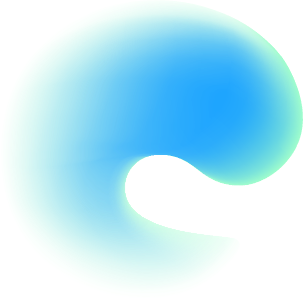
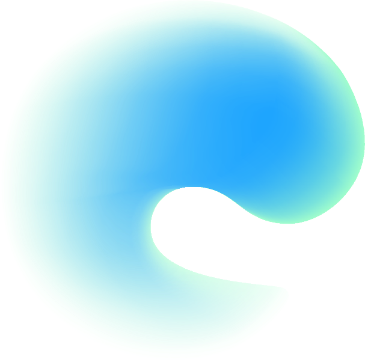

Drop
&Heal
Welkom bij Drop & Heal. Een veilige plek voor jouw reis door rouwverwerking.
Er volgt eerst een introductie en kennismaking, hierna kan je op eigen tempo aan de slag in de omgeving.
 

Welkom bij Drop & Heal. Een veilige plek voor jouw reis door rouwverwerking.
Er volgt eerst een introductie en kennismaking, hierna kan je op eigen tempo aan de slag in de omgeving.